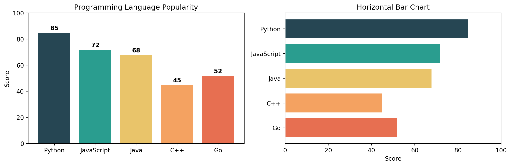

Q1. What is Matplotlib and why is it essential for data visualization?
Answer: Matplotlib is Python’s foundational 2D plotting library, created by John Hunter in 2003. It provides:
Complete control over every plot element (axes, ticks, labels, colors)
Publication-quality output in multiple formats (PNG, PDF, SVG, EPS)
Integration with NumPy, Pandas, and the entire scientific Python ecosystem
Two interfaces: quick pyplot (MATLAB-style) and powerful object-oriented API
import numpy as npimport matplotlib.pyplot as pltimport matplotlib as mplprint(f"Matplotlib version: {mpl.__version__}")print(f"Available backends: {mpl.rcsetup.all_backends[:5]}...")
Matplotlib version: 3.9.4
Available backends: ['gtk3agg', 'gtk3cairo', 'gtk4agg', 'gtk4cairo', 'macosx']...
Note
If Matplotlib is missing, install it with:
pip install matplotlib
Q2. What are the key parts of a Matplotlib figure?
Answer: Every Matplotlib visualization consists of:
Figure: The entire window/page containing everything
Axes: The actual plot area with data, ticks, labels (a Figure can have multiple Axes)
Axis: The x-axis and y-axis objects controlling ticks and limits
Artist: Everything visible on the figure (lines, text, patches, etc.)
Create a simple line plot of \(y = x^2\) for x ∈ [0, 10].
Requirements: - Blue solid line with linewidth=2 - Title: “Quadratic Function” - X and Y axis labels - Grid enabled
Challenge 2 (Easy): Multiple Lines with Legend
Plot \(y = x\), \(y = x^2\), and \(y = x^3\) on the same figure for x ∈ [0, 3].
Requirements: - Different colors for each line - Line labels and legend - Add grid with alpha=0.3
Challenge 3 (Moderate): Customized Sine Waves
Create a figure showing \(\sin(x)\), \(\sin(2x)\), and \(\sin(3x)\) for x ∈ [0, 2π].
Requirements: - Different line styles (solid, dashed, dotted) - Custom colors (not default) - Legend positioned at ‘upper right’ - Add horizontal line at y=0 - Custom x-ticks at [0, π/2, π, 3π/2, 2π] with labels [‘0’, ‘π/2’, ‘π’, ‘3π/2’, ‘2π’]
Challenge 4 (Moderate): Reference Lines and Spans
Plot \(y = e^{-x} \cdot \cos(2\pi x)\) for x ∈ [0, 5].
Requirements: - Highlight the region where |y| < 0.2 using axhspan - Add vertical lines at x = 1, 2, 3, 4 using axvline - Mark the envelope curves \(\pm e^{-x}\) with dashed lines - Proper annotations explaining what each element represents
Create a plot showing three exponential decay curves: \(e^{-x}\), \(e^{-2x}\), and \(e^{-0.5x}\) for x ∈ [0, 5].
Requirements: 1. Different line styles and colors for each curve 2. A horizontal line at y=0.1 (threshold) 3. Vertical line where \(e^{-x}\) crosses the threshold (x = ln(10) ≈ 2.303) 4. Annotation pointing to the intersection 5. LaTeX labels: \(e^{-x}\), \(e^{-2x}\), \(e^{-0.5x}\) 6. Legend with title “Decay Rates” 7. Save as both PNG (300 DPI) and SVG
Part 2: Intermediate Visualizations
Q11. How do I create bar charts (vertical and horizontal)?
Answer: Use bar() for vertical and barh() for horizontal bars.
categories = ['Python', 'JavaScript', 'Java', 'C++', 'Go']values = [85, 72, 68, 45, 52]colors = ['#264653', '#2a9d8f', '#e9c46a', '#f4a261', '#e76f51']fig, axs = plt.subplots(1, 2, figsize=(12, 4))# Vertical barsaxs[0].bar(categories, values, color=colors, edgecolor='white', linewidth=1.5)axs[0].set_title("Programming Language Popularity")axs[0].set_ylabel("Score")axs[0].set_ylim(0, 100)# Add value labels on barsfor i, (cat, val) inenumerate(zip(categories, values)): axs[0].text(i, val +2, str(val), ha='center', fontweight='bold')# Horizontal barsaxs[1].barh(categories, values, color=colors, edgecolor='white', linewidth=1.5)axs[1].set_title("Horizontal Bar Chart")axs[1].set_xlabel("Score")axs[1].set_xlim(0, 100)axs[1].invert_yaxis() # Top category firstplt.tight_layout()plt.show()

Q12. How do I create grouped and stacked bar charts?
Answer: For grouped bars, offset the x positions. For stacked, use the bottom parameter.
Create a bar chart comparing sales across 5 products: [‘Laptop’, ‘Phone’, ‘Tablet’, ‘Watch’, ‘Earbuds’] with values [150, 280, 95, 120, 200].
Requirements: - Different color for each bar - Add value labels on top of each bar - Title and axis labels - Grid on y-axis only
Challenge 2 (Easy): Simple Scatter Plot
Generate 50 random points (x from uniform [0, 10], y = 2x + noise).
Requirements: - Scatter plot with alpha=0.7 - Different marker size based on y-value - Add a trend line (y = 2x) - Legend distinguishing data vs. trend
Challenge 3 (Moderate): Grouped Bar Chart with Error Bars
Compare performance metrics across 4 teams for 3 quarters.
Requirements: - Grouped bars (3 groups of 4 bars each) - Error bars representing standard deviation - Different colors per quarter - Rotated x-tick labels - Legend outside the plot area
Challenge 4 (Moderate): Histogram with Statistical Annotations
Generate 1000 samples from a normal distribution (mean=75, std=10).
Requirements: - Histogram with 30 bins - Overlay a density curve (kernel density estimate or theoretical normal) - Vertical lines showing mean and ±1σ, ±2σ - Text annotation showing mean and standard deviation values - Different colors for each region (within 1σ, between 1σ-2σ, beyond 2σ)
Create a 2×2 subplot panel analyzing mock business data:
Requirements: 1. Top-left: Monthly revenue time series (line chart with fill_between showing growth area) 2. Top-right: Revenue by product category (horizontal bar chart, sorted by value) 3. Bottom-left: Revenue vs. expenses scatter plot with: - Color representing profit margin - Size representing transaction volume - Colorbar showing profit scale 4. Bottom-right: Distribution of daily transactions (histogram with overlaid density curve)
Add: - Super title: “Business Analytics Dashboard” - Consistent color scheme across all panels - Proper annotations for key insights (e.g., best month, highest margin product)